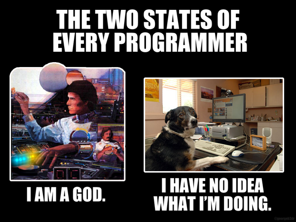

I remember fondly how excited I was the first time I understood an obscure coding joke on r/programmerhumor. It felt like finally being in “the club” and not feeling like such an outsider.
While I’ve been programming in some capacity or another for over 20 years, I didn’t get here through the regular channels. I didn’t get a degree in Computer Science. I’ve never worked at a startup or one of the Big 4 (or is it Frightful 5 now?). And as a result, I (like many programmers) often succumb to bouts of Imposter Syndrome. So finally feeling like I was part of the in-crowd was a victory in and of itself back then.
Part of that victory is not only understanding those in-jokes and memes, but also internalizing many of the lessons they have to teach. I’ve definitely purloined many a meme, joke, or comic along the way and made it my own.

Ok. Not like that. I don’t mean, I’ve claimed ownership in the conventional sense, but I mean I have taken quite a few to heart in ways that make them a part of who I am professionally and philosophically.
What follows is my attempt to call out some of those that have impacted me the most, as well as explain why so many of these are pinned to the walls of my cubicle.
Pick Two

This is probably one of the first memes I actually felt spoke to me and my frustrations with the limitations of project work in the software world. I remember just going, “Yeah. That.” And then feeling a deep need to print it out, stick it to the wall of my cubicle for reference the next time somebody asked for the impossible. Also known as all three.
All too often, we as developers, are asked to build quality products while still meeting deadlines and budgets with limited resources. Because so much of what we do is invisible to stakeholders and end-users, it is often hand-waved away as “magic” while somehow also simultaneously being dismissed as the type of work you can just hand off to the interchangable cogs. And if they can’t meet the feature requests then it’s likely just their competency that’s at issue.
We’ve all been spoiled by the free high-tech apps we consume on a daily basis and assume similar quality can be built by tiny teams. I am often comforted in those moments by the fundamental laws of production this meme espouses.
The Two States of Every Programmer

While we’re on the topic of imposter syndrome and our own limitations, this meme is one I identify with all the time. It doesn’t matter how good you get at programming. The field of what we know and what is possible is constantly shifting and growing. And there isn’t a day that goes by while debugging something or trying to get a new feature implemented that I don’t find myself osciallating between these states.
It’s important to remember we all feel this way and to remind ourselves of the opposite state when we’re stuck in the other.
I think what truly separates those that drown in the imposter syndrome river and those that keep paddling on is a healthy level of the growth mindset. I’m not afraid of failure and feeling like that confused dog, if every now and then I crack some puzzling code and feel lke a damn genius. That dopamine rush, however temporary or illusory, is a bit of an addiction. One I am more than happy to indulge at the cost of a little ego-death now and then.
Is it Worth the Time?

There are plenty of XKCD comics with jokes and references that fly right over my head, but this one not only speaks to me, it is damn well a guidepost in my work. This one is likewise hanging above my desk as a constant reminder and reference.
I spend a lot of time automating tasks. My own, my teams, and more often than not, those of other departments in the org. The automation of boring stuff is one of the most powerful impacts of code and one that I think gets at the heart of why we do what we do.
That being said, it’s incredibly easy to fall down your own rabbit hole trying to build the perfect solution in search of time savings. At the start of every new project request, I consult this chart and think deeply about the time being invested in the solution versus the time it’s actually saving. Return on investment is an important concept to grasp early on as a developer, because we’re inquisitive types who are more than willing to live in that damn rabbit hole if it means catching a white rabbit. Even if he is just a figment of our imagination.
You Don’t Have to Solve Everything Today
I’m pretty sure this meme’s original context was in regards to depression, but one that nonetheless serves as a daily reminder to walk away sometimes. It’s easy to get so wrapped up in a problem to completely lose track of time. I can be hacking away while the office slowly clears out. It’s easy to think “I’ll go home once I solve this problem, or make this commit” but that can spiral out of control fast.
The older I get and the more my priorities focus on family and sustaining a healthy work/life balance, the more I look to this meme as a reminder that it really can “wait until tomorrow”.
Remember, burn out is real and no one says on their death bed that they wish they had worked more. In the work/life balance equation, you’ve got to work to live not live to work. i
It’s corny. I know. But that doesn’t make it any less true.
Exploits of a Mom (AKA Little Bobby Tables)

I started my professional career as a programmer largely working with SQL. And it’s still a daily part of my workload. Security has been everyone’s minds in the last few years with all the data breaches and hacks. Education is not immune either, and this comic about SQL injection is a good reminder that it’s important to tighten up those holes in your apps lest someone exploit them for fun or profit!
Even in 2017, SQL injection was still the number one risk in the OWASP Top Ten Most Critical Web Application Security Risks.
Office Space Lumberg
I don’t think I truly appreciated the brilliance of Mike Judge’s Office Space until I started to work in an office job. Although, even as a teacher I identified with beating the crap out of a copier/fax machine. I laughed at all the jokes and obvious exaggerations, but now I find myself trying to figure out which of the characters I am and which ones I never want to be.
This is particularly true now that I’ve moved into a role as a manager. Lumberg is the quintessential terrible boss and every time I find myself leaning on one of my teammate’s cubicles with coffee cup in hand, I can’t help feeling like I might accidentally utter, “Yeah if you could just… that’d be great.”
Don’t be that guy. Don’t be that guy. Don’t be that guy.
I joke about it practically every time, but I really have internalized the idea that being someone’s boss isn’t about assigning them work and cracking the whip. That never helped me as an employee and I would never want to be that to someone else.
I’m still trying to find my way as I transition into this role, but so far, I’m finding that leading from the front is much more effective than shouting orders from the back. “Come with me” is so much more potent than “Go that way”.
What memes have you taken to heart in your work or personal life? Which comics or jokes do you comfort yourself with in your moments of desparation or exhilaration?